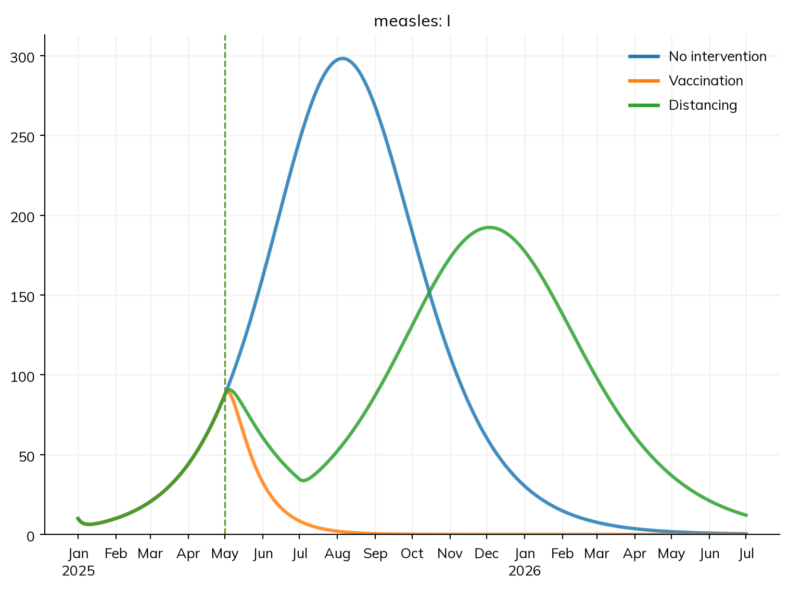
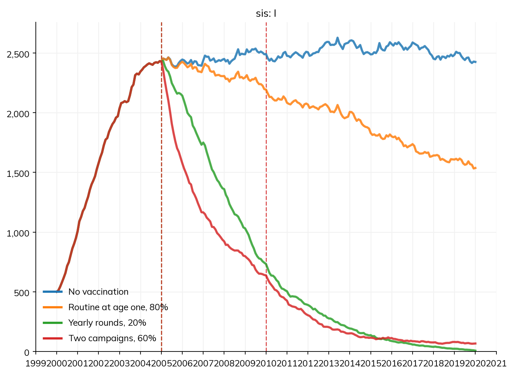
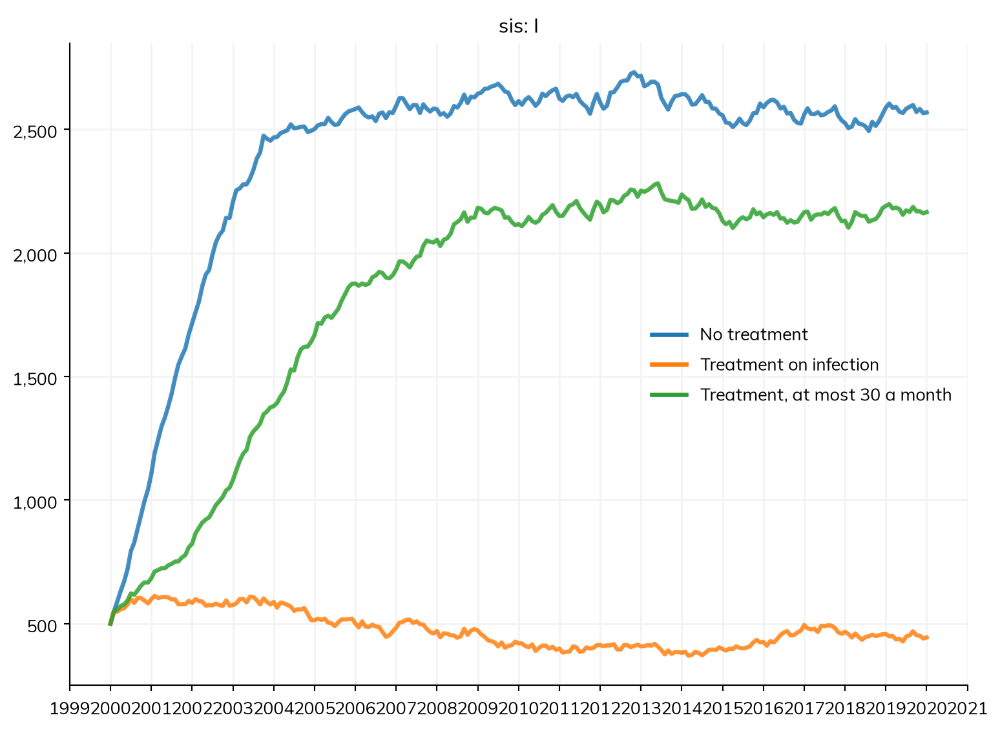
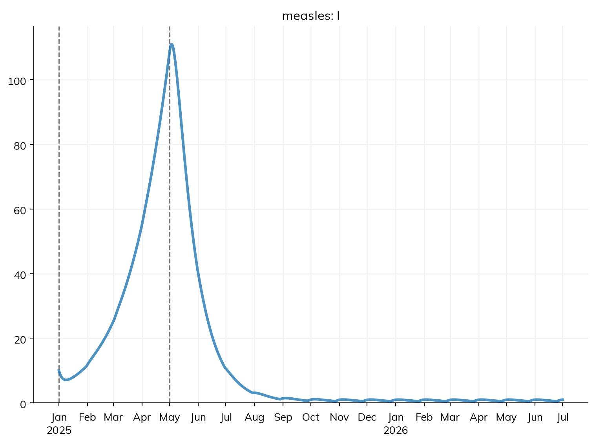

An intervention is anything done to change the course of an epidemic. Most are one of two kinds. Some deliver a product (a vaccine, a test, or a drug) to the people who are eligible, at given times or when something happens to them. Others change a quantity in the model, giving nothing to anyone: masks, distancing, and school closures change transmission. Anything else is an intervention written as code.
Here are the two kinds side by side, against measles in a town of 100,000 people, 90% of whom are immune (an SEIR model with an R0 of about 15, latent for 10 days and infectious for 8): a vaccination campaign that reaches 80% of people on 1 May, and distancing that halves transmission from 1 May to 1 July:
import numpy as npimport starsim as ssS, E, I, R = ss.states('S E I R')infection = S >> E @1.9*I # β = 1.9 per dayprogression = E >> I @ ss.days(10) # Latent for 10 days on averagerecovery = I >> R @ ss.days(8) # Infectious for 8 days on averagemeasles = ss.Disease(infection, progression, recovery, init=dict(R=0.9), init_n=dict(I=10)) # 90% immune, 10 infectiousvaccination = ss.vaccinate(efficacy=0.93, leaky=False, when='2025-05-01', coverage=0.8) # Delivers a productdistancing = ss.modify(measles.pars.beta, multiply=0.5, start='2025-05-01', stop='2025-07-01') # Changes a parameterkw =dict(total_pop=100_000, start='2025-01-01', stop='2026-07-01', verbose=0)msim = ss.parallel({'No intervention': ss.Sim(measles, **kw),'Vaccination': ss.Sim(measles, interventions=vaccination, **kw),'Distancing': ss.Sim(measles, interventions=distancing, **kw),})msim.plot('measles.I')msim.summarize().loc['measles_infection']
value
scenario
No intervention
5,955
Vaccination
764
Distancing
5,467
library(starsim)states("S E I R")measles <-Disease(infection =Transition(S, E, rate =1.9* I), # β = 1.9 per dayprogression =Transition(E, I, dur =days(10)), # Latent for 10 days on averagerecovery =Transition(I, R, dur =days(8)), # Infectious for 8 days on averageinit =list(R =0.9), # 90% immuneinit_n =list(I =10) # 10 infectious)vaccination <-vaccinate(efficacy =0.93, leaky =FALSE, when ="2025-05-01", coverage =0.8) # Delivers a productdistancing <-modify(measles$pars$beta, multiply =0.5, start ="2025-05-01", stop ="2025-07-01") # Changes a parametermake_sim <-function(...) { # A sim with these settings, and any others givenSim(measles, total_pop =100000, start ="2025-01-01", stop ="2026-07-01", verbose =0, ...)}msim <-parallel(list("No intervention"=make_sim(),"Vaccination"=make_sim(interventions = vaccination),"Distancing"=make_sim(interventions = distancing)))msim$plot("measles.I")subset(summary(msim), result =="measles_infection")
S, E, I, R = ss.State(name='S'), ss.State(name='E'), ss.State(name='I'), ss.State(name='R')measles_explicit = ss.Disease(transitions= [ ss.Transition(source=S, dest=E, rate=ss.perday(1.9)*I, name='infection'), ss.Transition(source=E, dest=I, dur=ss.expon(mean=ss.days(10)), name='progression'), ss.Transition(source=I, dest=R, dur=ss.expon(mean=ss.days(8)), name='recovery'), ],init=dict(R=0.9), # The rest start in Sinit_n=dict(I=10),name='measles',)vaccine = ss.Vaccine(efficacy=0.93, leaky=False) # The productvaccination_explicit = ss.vaccinate(vaccine, when='2025-05-01', coverage=0.8, name='vaccination') # The deliverydistancing_explicit = ss.modify(measles_explicit.pars.beta, multiply=0.5, start='2025-05-01', stop='2025-07-01', name='distancing')kw_explicit =dict(networks=ss.contacts(1), total_pop=100_000, start='2025-01-01', stop='2026-07-01', dt=ss.days(1), unit='day', solver='ode', verbose=0)msim_explicit = ss.parallel({'No intervention': ss.Sim(diseases=measles_explicit, **kw_explicit),'Vaccination': ss.Sim(diseases=measles_explicit, interventions=vaccination_explicit, **kw_explicit),'Distancing': ss.Sim(diseases=measles_explicit, interventions=distancing_explicit, **kw_explicit),})msim_explicit.plot('measles.I')msim_explicit.summarize().loc['measles_infection']

value
scenario
No intervention
5,955
Vaccination
764
Distancing
5,467
Delivering products
A delivery says who receives the product, when, and how many. There is one for each kind of product, ss.vaccinate(), ss.screen(), and ss.treat(); each takes the product as its first argument (ss.vaccinate(vaccine, ...)), or the product’s own keywords. A delivery takes its name from the variable it is assigned to, and has results of its own: the number delivered on each step, the number eligible, and the coverage reached. Its keywords are the same for every product:
Keyword
Meaning
who=
Who can receive it: a condition (ss.person.age < 15), people as they reach an age (ss.at_age(ss.months(9))), or a function of the sim
when=
When: at times ('2025-05-01'), this far apart (ss.schedule(every=ss.years(1))), or on an event (screening.positive); with none, routinely
start=, stop=
A window it is delivered in, with any when=
coverage=
The fraction of eligible people reached
capacity=
The number that can be delivered (per round, per step, or as a rate), or ss.capacity(n, priority=..., queue=...) to say who is served first and whether the rest wait
skip_reached_within=
Skip those this delivery reached less than this long ago, e.g. ss.years(1) (agents only)
trace=
Deliver to the contacts of those selected, on a network (agents only)
disease=
The disease the product acts on, if there is more than one
The appendix lists every delivery, and every form of who= and when=. The examples in this section use a curable infection with no lasting immunity, as an SIS model run as agents:
S, I = ss.states('S I')infection = S >> I @ ss.peryear(2)*I # β = 2 per yearrecovery = I >> S @ ss.years(1) # Infected for a year on average, then susceptible againsis = ss.Disease(infection, recovery, init_prev=0.1)kw =dict(n_agents=5000, start=2000, stop=2020, dt=ss.months(1), verbose=0)
states("S I")sis <-Disease(infection =Transition(S, I, rate = ss$peryear(2) * I), # β = 2 per yearrecovery =Transition(I, S, dur =years(1)), # Infected for a year on average, then susceptible againinit_prev =0.1)make_sim <-function(...) { # A sim with these settings, and any others givenSim(sis, n_agents =5000, start =2000, stop =2020, dt = ss$months(1), verbose =0, ...)}
Rounds and routine delivery
With times or how often (ss.schedule(every=...)) as when=, delivery is in rounds: in each round, every eligible person is offered the product once. With no when= (with or without start= and stop=), delivery is routine: each person is offered it once, at the first step on which they are eligible, such as children as they reach an age (who=ss.at_age(ss.months(9))). Routine delivery needs people to become eligible over time, so this example adds births and deaths:
kw_births =dict(kw, demographics=[ss.birth(rate=ss.peryear(0.03)), ss.death(rate=ss.peryear(0.03))])routine = ss.vaccinate(efficacy=0.8, who=ss.at_age(ss.years(1)), start='2005', coverage=0.8) # Once per child, as they turn oneyearly = ss.vaccinate(efficacy=0.8, when=ss.schedule(every=ss.years(1), start='2005'), coverage=0.2) # A round every yearcampaign = ss.vaccinate(efficacy=0.8, when=['2005', '2010'], coverage=0.6) # Two roundsscenarios = {'No vaccination': ss.Sim(sis, **kw_births),'Routine at age one, 80%': ss.Sim(sis, interventions=routine, **kw_births),'Yearly rounds, 20%': ss.Sim(sis, interventions=yearly, **kw_births),'Two campaigns, 60%': ss.Sim(sis, interventions=campaign, **kw_births),}msim = ss.parallel(scenarios)msim.plot('sis.I')

births_deaths <-list(ss$birth(rate = ss$peryear(0.03)), ss$death(rate = ss$peryear(0.03)))routine <-vaccinate(efficacy =0.8, who = ss$at_age(years(1)), start ="2005", coverage =0.8) # Once per child, as they turn oneyearly <-vaccinate(efficacy =0.8, when = ss$schedule(every =years(1), start ="2005"), coverage =0.2) # A round every yearcampaign <-vaccinate(efficacy =0.8, when =c("2005", "2010"), coverage =0.6) # Two roundsscenarios <-list("No vaccination"=make_sim(demographics = births_deaths),"Routine at age one, 80%"=make_sim(demographics = births_deaths, interventions = routine),"Yearly rounds, 20%"=make_sim(demographics = births_deaths, interventions = yearly),"Two campaigns, 60%"=make_sim(demographics = births_deaths, interventions = campaign))msim <-parallel(scenarios)msim$plot("sis.I")
ss.schedule() makes a list of times; a plain list, when=list(range(2005, 2021)), works too.
As compartments, ss.at_age() needs age groups with an edge at that age (e.g. measles.stratify(age=[0, 0.75, 1, 5, 15]) for 9 months).
Coverage and capacity
coverage=0.7 is a fraction of the eligible people. A typed rate, such as coverage=ss.perday(0.1), is the chance of being reached over the step, which routine delivery offers at every step to those eligible (a rate of seeking care, for example). capacity= is the number available: a bare number is per round (or per step, for delivery on events), and a rate, such as ss.peryear(500), is per unit time, which routine delivery needs. Coverage is applied first, and capacity caps the result (an example is below). When there is too little capacity, those served are chosen at random, unless ss.capacity(n, priority=...) says who comes first: a condition, or a list of them served in order ([sis.I, ss.person.age >= 65]), or a score, highest first (-hiv.cd4). With ss.capacity(n, queue=True), those not served wait, longest first; a duration (queue=ss.months(6)) limits the wait, and those still waiting at its end are the delivery’s outcome never_ran.
Who is eligible
who= is a condition on people or on the states of modules, written before the sim exists: ss.person.age < 15, sis.I, or a combination with &, |, and ~ (and, or, not), such as (ss.person.age >= 65) & ~sis.I. It can also be a condition on the whole population (sis.I.n > 1000), or a function of the sim returning a boolean array, the UIDs of people, or True or False for everyone. A condition on a property of people, such as age, runs as compartments only if the model is stratified by it; otherwise the model runs as agents. The who= of ss.modify()below works the same way.
Here children are vaccinated, and the 200 oldest people who are infected are treated each year, chosen by a function, which is called on each step the delivery happens:
defoldest_infected(sim):""" The 200 oldest people who are infected """ infected = sim.diseases.sis.I.uids order = np.argsort(sim.people.age[infected])return infected[order[-200:]]children = ss.vaccinate(efficacy=0.8, who=ss.person.age <15, when=['2005'], coverage=0.9)targeted = ss.treat(cure=0.9, who=oldest_infected, when=ss.schedule(every=ss.years(1), start='2005'))sim = ss.Sim(sis, interventions=[children, targeted], **kw)sim.run()print('Children vaccinated:', sim.results.children.delivered.sum())print('Treated:', sim.results.targeted.delivered.sum())
Children vaccinated: 1067.0
Treated: 3200.0
A function in when= is a function of the date, true on the steps it is delivered (e.g. when=lambda now: now.month == 1).
Delivery when something happens
An event as when= delivers to the people something has just happened to: a transition (sis.infection, or by its path, 'sis.infection'), or the outcome of another delivery. who= then says which of them are eligible. Here half of people are treated when they are infected, with no limit, or with up to 30 treatments a month:
unlimited = ss.treat(cure=0.9, when=sis.infection, coverage=0.5, name='on_infection')limited = ss.treat(cure=0.9, when=sis.infection, coverage=0.5, capacity=30, name='on_infection')msim = ss.parallel({'No treatment': ss.Sim(sis, **kw),'Treatment on infection': ss.Sim(sis, interventions=unlimited, **kw),'Treatment, at most 30 a month': ss.Sim(sis, interventions=limited, **kw),})msim.plot('sis.I')

A delivery triggered by a transition acts on the next step; an outcome of another delivery triggers its follow-up in the same step. For a step that must happen at once, declare it as a transition of the disease, e.g. T >> D @ ss.on(care) (see Diseases).
Each event remembers, per person, whether it ever happened (.ever), how often (.n_times), and how long ago (.since), and ss.mother(cond, include_born=True) holds for a person whose mother meets cond. Here newborns are tested if their mother tested positive at antenatal care within the past year:
pregnancy = ss.Pregnancy(fertility_rate=ss.peryear(0.1)) # Conceptions a year per woman: 100 per 1,000anc = ss.screen(sensitivity=0.9, specificity=0.98, who=pregnancy.P, coverage=0.5)newborn = ss.screen(sensitivity=0.9, specificity=0.98, who=ss.mother(anc.positive.since <= ss.years(1), include_born=True), when=pregnancy.birth)sim = ss.Sim(sis, demographics=pregnancy, interventions=[anc, newborn], **kw)sim.run()print('Newborns tested:', sim.results.newborn.delivered.sum())
Newborns tested: 1273.0
As agents, these can be read after a run (sim.interventions.screening.ever.uids), and delivery.reached() gives the UIDs reached on this step. trace= is contact tracing: it delivers to the contacts, on a network, of the people the event in when= selects; a network with memory= reaches recent past partners too (see Contact networks).
Events: moves without a product
ss.Event() is what the deliveries are made from: something that happens to people, here a move between states, with no product. It takes who= and when= as a delivery does, and says how many it reaches with n= (at most that many each time) and p= (the chance for each person); a delivery takes a move as its first argument too, when it needs a delivery’s keywords, such as coverage=. It runs under every solver. Here measles is brought into the town of the first example by two infections a month, and the campaign is a move of the people it protects (80% reached, 93% of them protected) to the recovered state:
S, E, I, R = measles.S, measles.E, measles.I, measles.R # The states of the first example's measlesimports = ss.Event(S >> E, when=ss.schedule(every=ss.days(30)), n=2) # Two susceptible people infected each monthcampaign = ss.Event(S >> R, when='2025-05-01', p=0.8*0.93) # Protection as a move between statessim = ss.Sim(measles, interventions=[imports, campaign], total_pop=100_000, start='2025-01-01', stop='2026-07-01', verbose=0)sim.run()sim.plot('measles.I')

states("S E I R") # The states of the first example's measlesimports <- ss$Event(Transition(S, E), when = ss$schedule(every =days(30)), n =2) # Two susceptible people infected each monthcampaign <- ss$Event(Transition(S, R), when ="2025-05-01", p =0.8*0.93) # Protection as a move between statessim <-Sim(measles, interventions =list(imports, campaign), total_pop =100000, start ="2025-01-01", stop ="2026-07-01", verbose =0)sim$run()sim$plot("measles.I")
The other forms of an event:
dict(vaccinated=True) moves people to a level of a stratification, and dict(risk=('low', 'high')) from one level to another (see Stratification).
strain= gives the strain people arrive with in a move into an infected state: ss.Event(S >> E, when=['2021-01-01'], n=20, strain='alpha') brings a new strain in on a date; DS >> RIF changes the strain people carry, e.g. to a drug-resistant one (see Diseases).
increment='doses' adds one to a counter for each person reached (with the model stratified by doses=[0, 1, 2, 3]), and dict(doses=2) adds two.
With no move or increment, an event is a step people attend, such as a clinic visit, which several deliveries can follow with when=visit.
Changing parameters
ss.modify() changes a quantity in the model for as long as it applies, as distancing does in the first example. The examples in this section use a flu-like epidemic (β = 0.4 per day, infectious for 5 days, so R0 = 2), here with masks that cut transmission by 40% from day 20 to day 60, and distancing that halves it from day 20 and eases to 80% of its usual level from day 60:
S, I, R = ss.states('S I R')infection = S >> I @0.4*I # β = 0.4 per dayrecovery = I >> R @ ss.days(5) # Infectious for 5 days on averageflu = ss.Disease(infection, recovery, init_prev=0.001)masks = ss.modify(flu.pars.beta, multiply=0.6, start=ss.days(20), stop=ss.days(60))distancing = ss.modify(flu.pars.beta, multiply=ss.timeseries({ss.days(20): 0.5, ss.days(60): 0.8}), start=ss.days(20))kw =dict(total_pop=100_000, stop=ss.days(150), verbose=0)msim = ss.parallel({'No intervention': ss.Sim(flu, **kw),'Masks': ss.Sim(flu, interventions=masks, **kw),'Distancing': ss.Sim(flu, interventions=distancing, **kw),})msim.plot('flu.I')
flu.pars.beta is the β of the transmission, which a declared disease names beta.
What a modifier takes
ss.modify(target, multiply=...) applies always, between a start and a stop, at the times when= gives, or where a condition holds (who=). It takes exactly one of:
Keyword
What it does
multiply=
Multiplies the quantity
efficacy=
Removes a fraction of the risk: the same as multiply=1 - efficacy, for protection such as condoms
add=
Adds to the quantity (parameters only), or to an inflow from outside the model (ss.modify(typhoid.shedding, add=ss.perday(4e6)))
set=
Replaces the quantity (parameters only)
and any of:
Keyword
Meaning
who=
Who it applies to: a condition, or a function of the sim (by default, everyone)
start=, stop=
When it starts and stops applying (by default, always): dates, years, or durations after the start
when=
When it applies, on time alone (by default, always): a schedule of times or how often, or a function of the date that returns True on the steps it applies (lambda now: now.month in [6, 7, 8])
until=
Once who= (or when=) selects someone, it stays on for them: for at least this long (a duration), or until this condition holds
frac=
With multiply= or efficacy=, the fraction of acts (or contacts) it applies to, e.g. condom use in 30% of acts; with network=, as agents, a function of the network giving a fraction for each partnership, e.g. frac=lambda net: net.edges.condoms
network=
For a change to transmission, the network or networks it applies on, by name (by default, all)
The amount can itself vary: multiply= takes anything a parameter takes, such as ss.seasonal() or ss.timeseries() (see Parameters). multiply=ss.timeseries({t1: x1, t2: x2}) multiplies the quantity by each value from its time until the next, each relative to the quantity’s own value, not to the one before; set= gives values instead. The times are dates or years in a sim with a calendar, numbers in the sim’s unit in one without, and in either a duration is that long after the start (ss.days(20)).
The target of a modifier is any named quantity in the model:
Target
Example
What it changes
A parameter
flu.pars.beta
The parameter, for everyone it applies to
A transition
flu.recovery
The transition’s rate (or its probability, for a branch with p=)
Susceptibility or infectiousness
flu.rel_sus, flu.rel_trans
Each person’s relative chance of infection, or of infecting others (multiply only)
A network or contact layer
school, from ss.contacts('Kenya', layer=[...])
The contacts on it
Any of these by name
'flu.pars.beta', 'school.pars.n_contacts'
The same, written as a path
Here faster diagnosis from day 30 halves the time that people stay infectious, by doubling the rate of recovery, and susceptibility is halved for people aged 65 and over in an age-structured version of the model:
Closing schools is a modifier on the school layer of a contact matrix: see Population data.
Changes triggered by the epidemic
A rule such as “close schools when cases pass a threshold” is a who= that is a condition on the population, or a function of the sim, which can read the stocks at the start of the step (sim.results.flu.I[sim.ti]) and the flows of the steps before ([sim.ti - 1]). A bare threshold switches on and off as the epidemic crosses it; until= adds memory: once on, the modifier stays on for at least a duration, or until a condition holds. Here transmission is halved for at least 30 days whenever more than 5,000 people are infectious, or from when 2,000 are until 1,000 are:
defmany_infectious(sim):return sim.results.flu.I[sim.ti] >5000# The number infectious at the start of this stepreactive = ss.modify(flu.pars.beta, multiply=0.5, who=many_infectious, until=ss.days(30))lockdown = ss.modify(flu.pars.beta, multiply=0.5, who=flu.I.n >=2000, until=flu.I.n <=1000)msim = ss.parallel({'No intervention': ss.Sim(flu, **kw),'For 30 days, above 5,000': ss.Sim(flu, interventions=reactive, **kw),'From 2,000 down to 1,000': ss.Sim(flu, interventions=lockdown, **kw),})msim.plot('flu.I')
A condition on a result can be worked out for each place (or other group) on its own: who=flu.infection.incidence(over=ss.days(7), by='patch') > 200e-5 applies in each place whose cases over a week pass 200 per 100,000 people.
Any other rule that remembers what it did is an intervention written as code (see below).
How changes combine
A modifier never overwrites the quantity it changes. The quantity keeps its own base value, and the modifiers active now are applied on top of it to give the effective value, which the model uses:
effective = (the set value, if any, otherwise the base) × every multiplier + every addition
whatever order the modifiers were given in: two 40% reductions give a 64% reduction (0.6 × 0.6 = 0.36), and the efficacies of products are multipliers of the same kind. As agents, the effective value of each person is dis.current_value(), e.g. sim.diseases.flu_age.current_value('rel_sus') (rel_sus itself gives the base values), and sim.what_modifies(sim.diseases.flu_age.rel_sus) lists the modifiers on a quantity, with their conditions.
A modifier can be given to the sim with interventions= or connectors=; the two differ only in where they run in each step. By convention, policies go in interventions=, and interactions that are part of the biology in connectors= (see Connectors).
As agents, a change to contacts (such as multiply=0.5 on a layer) means each contact happens with that probability in a step; in a compartmental run, the contacts are scaled.
Writing an intervention as code
Anything deliveries and modifiers can’t say is a subclass of ss.Intervention with a step() method, which runs on every step and can read and change anything in the sim (see Custom modules, and the tutorial T8 – Custom modules).
An intervention written as code is best kept to deciding, leaving the change itself to ss.modify(), so that the base value is never overwritten and the change combines with others: e.g. an intervention lockdown whose step() sets self.active, and ss.modify(flu.pars.beta, multiply=0.5, who=lambda sim: sim.interventions.lockdown.active). A product whose effect needs code is a subclass of ss.Product instead: see Products.
An intervention that acts on people can be given who=, as a delivery is (including a state by its path, 'flu.I'). Its step() then gets the UIDs of those eligible now, and alive, from self.check_eligibility(), which a subclass can override for a rule of its own:
classIsolate(ss.Intervention):""" Each day, a fraction of the people eligible are isolated, which ends their infectiousness """def__init__(self, p=0.2, **kwargs):super().__init__(**kwargs) # Including who=self.define_pars(p=p)returndefstep(self): uids =self.check_eligibility()self.sim.diseases.flu.move(uids, 'R', p=self.pars.p) # A fraction of those eligible (here the infectious)returnisolate =Isolate(who='flu.I')sim = ss.Sim(flu, interventions=isolate, n_agents=10_000, stop=ss.days(150), verbose=0).run()print('Peak infectious:', sim.results.flu.I.max())
Peak infectious: 10.0
Pitfalls
Infections delayed, not averted. A change that ends can mostly delay infections rather than avert them: in the first example, distancing for two months pushes the peak months later but averts fewer than a tenth of the infections over the 18 months, while vaccination averts most. How much a temporary change averts depends on the epidemic and on the horizon, so run long enough to count what happens after it ends (see Scenarios).
Routine is once per person. For a fraction of people reached every year, use yearly rounds, or routine delivery with a typed coverage (coverage=ss.probperyear(0.5)), a chance at every step for as long as people are eligible.
A function made in a loop sees the loop’s last value. Every who=lambda sim: sim.people.age >= lower made in for lower in [0, 15]: uses 15. Use a condition (who=ss.person.age >= lower), which keeps the value it was written with.